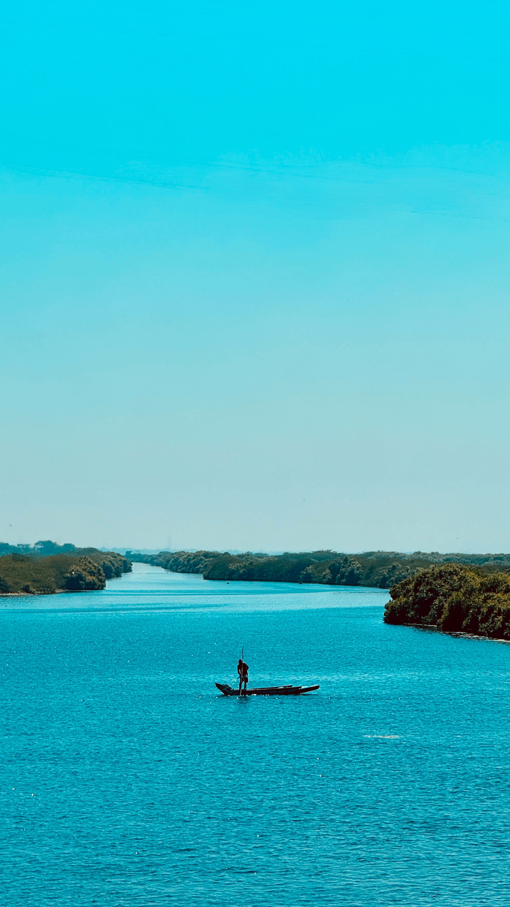
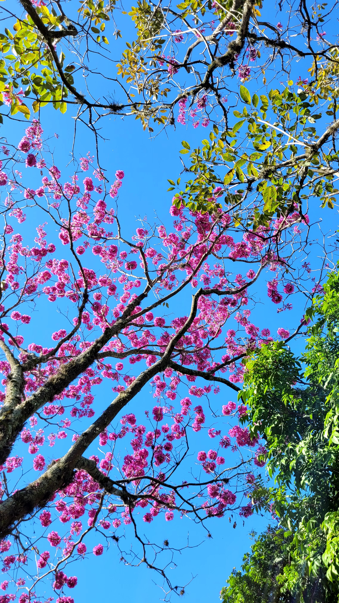
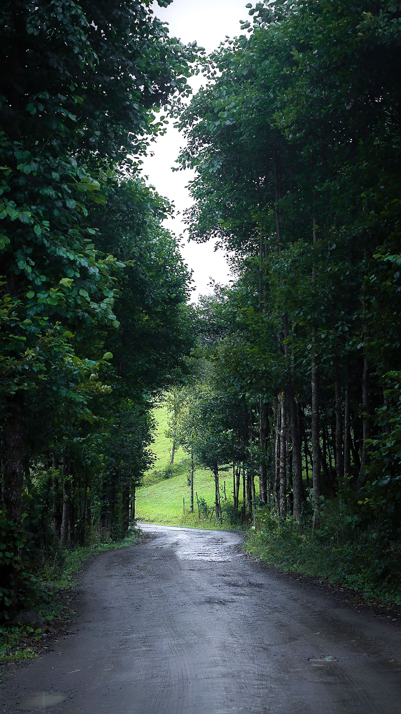
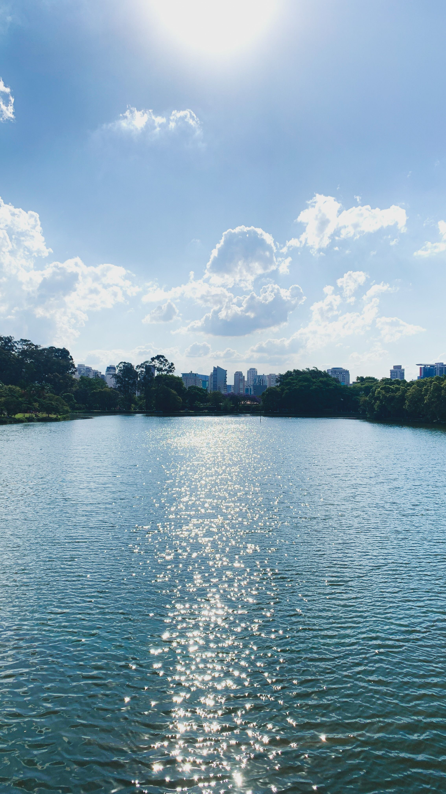
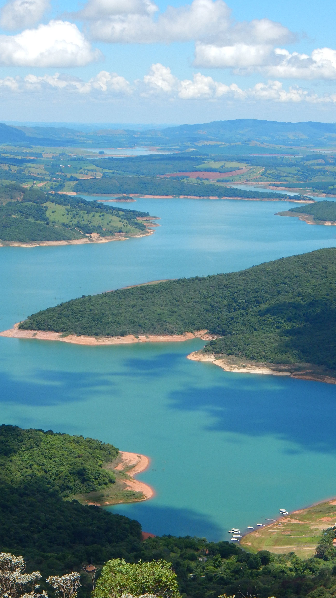
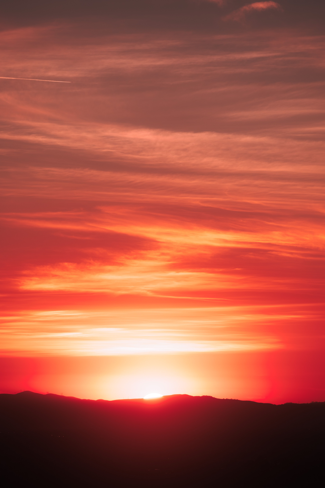

Fotografia
Ensaios e expedições fotográficas focados na vida selvagem e paisagens naturais em alta resolução para acervos e decoração.
A EcoAmorim Fotografia nasceu da paixão pelas paisagens do mundo e pela preservação da natureza. Capturamos a essência da vida selvagem, ambientes naturais e paisagens intocadas com sensibilidade artística e rigor técnico. Cada imagem conta uma história única, transformando momentos breves da Terra em quadros vivos cheios de emoção, perfeitos para quadros, acervos e campanhas que buscam conectar as pessoas com a beleza autêntica do nosso planeta.
Ver maisSurgida do olhar curioso de quem cresceu entre os manguezais e o litoral de Recife, Pernambuco, a EcoAmorim expandiu suas fronteiras para o mundo. Com uma câmera a tiracolo e a essência de buscar conexões autênticas, percorremos dos picos nevados às florestas tropicais mais remotas. Nosso compromisso é registrar a grandiosidade e a fragilidade do meio ambiente sem intervenções artificiais, entregando obras em alta resolução cheias de significado e impacto visual.
Contratar Agora
Ensaios e expedições fotográficas focados na vida selvagem e paisagens naturais em alta resolução para acervos e decoração.

Pós-produção e edição cinematográfica de vídeos e documentários ambientais com colorimetria e narrativa envolvente.

Gravação de cenas e registros aéreos e terrestres da natureza para marcas sustentáveis, projetos e produções visuais.

Retoque profissional e otimização de cores mantendo a fidelidade das luzes e texturas originais do meio ambiente.






Desenvolvido por EcoAmorim
Voltar para o topo